Her kreşe kendi hikâyesini anlatan bir site.
Okulun Instagram'ını, logosunu ve eğitim yaklaşımını inceleyip ona özel tasarlıyorum. Turşu kuran kavanozdan tren biletli ön kayda, her sitede o okula ait bir oyun var. Veli programı, günü ve menüyü görüyor; ön kayıt tek dokunuşla okulun WhatsApp'ına düşüyor.
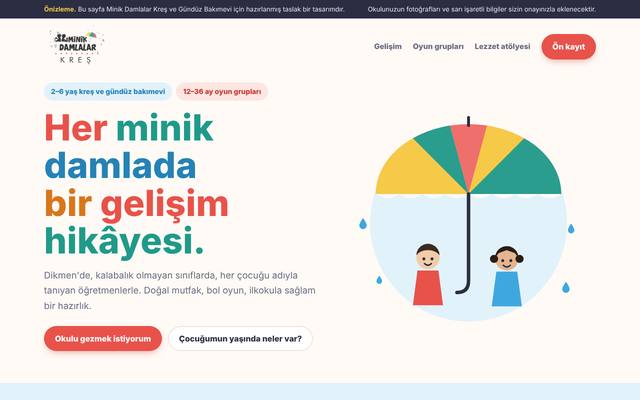
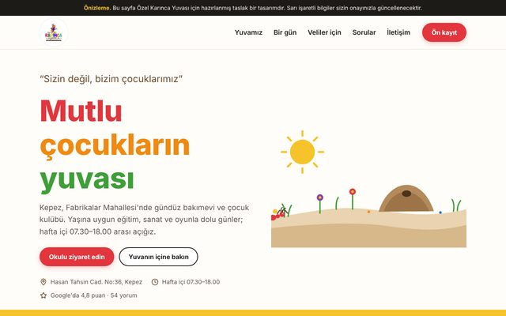
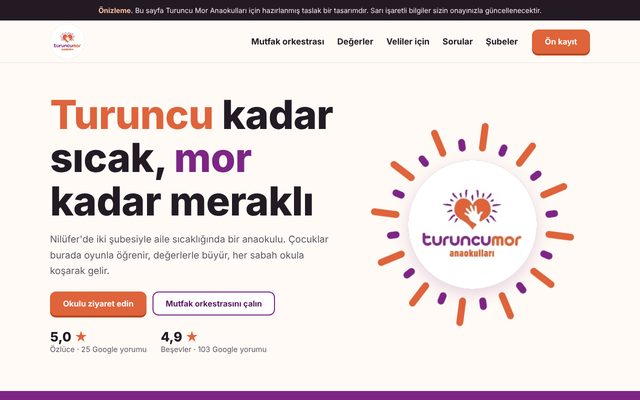
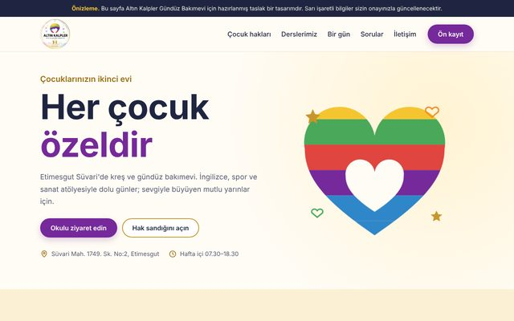
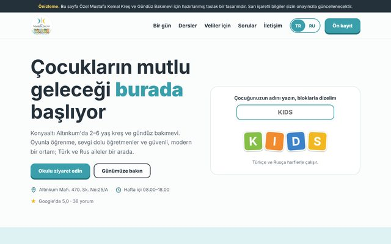
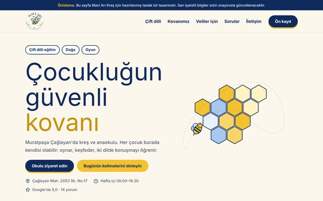
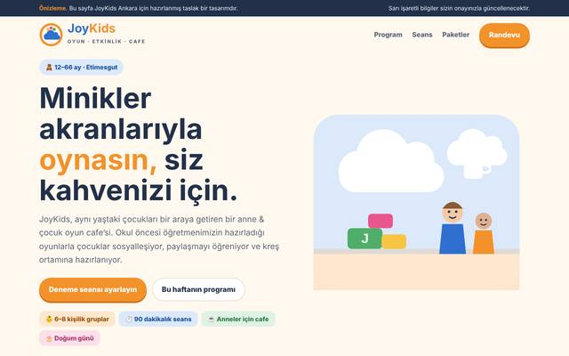
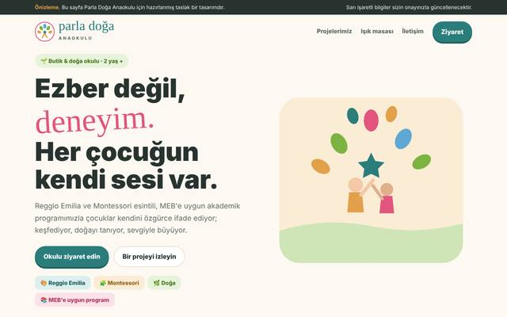
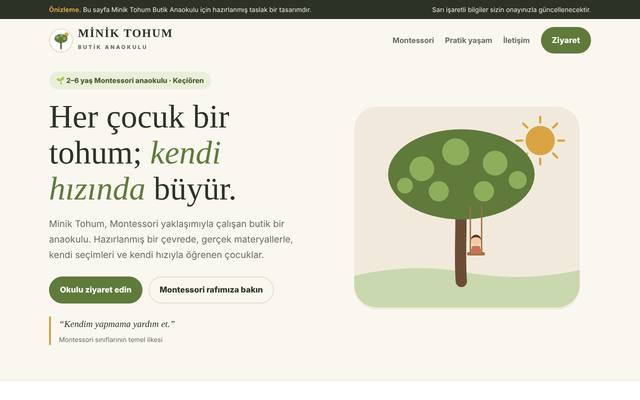
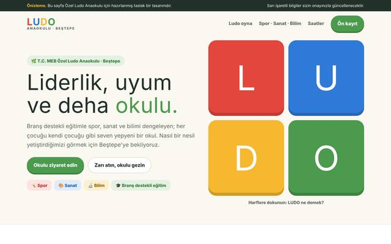
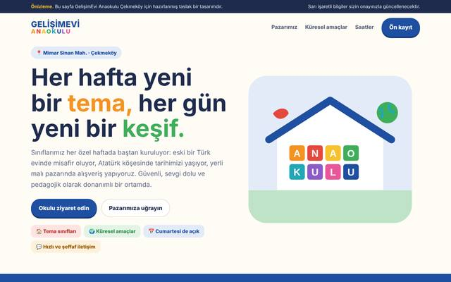
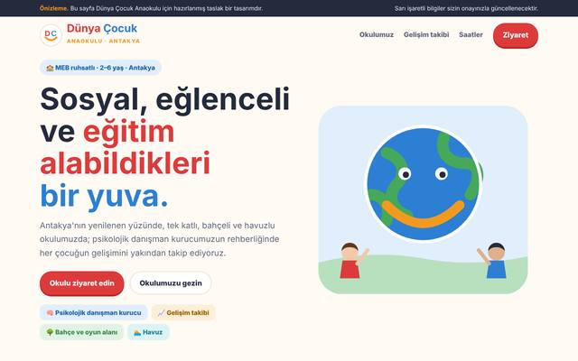
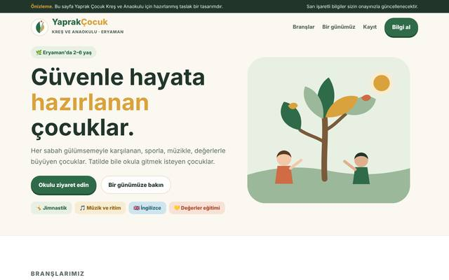
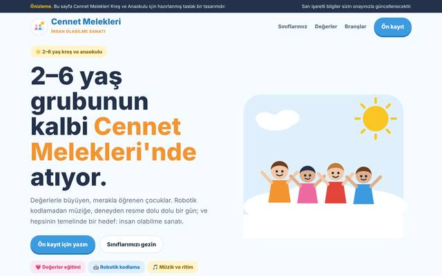
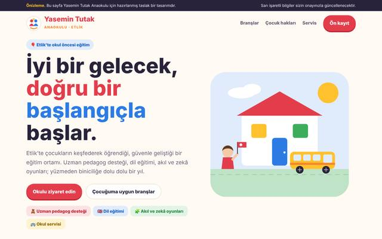
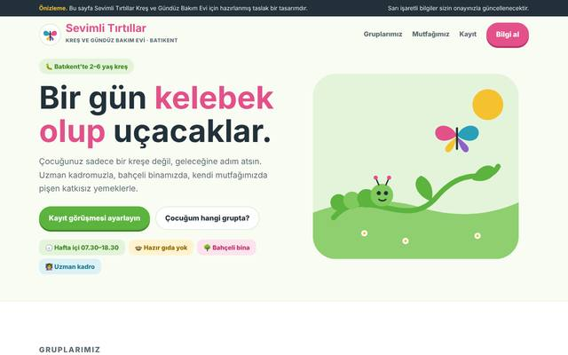
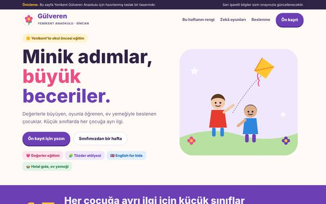
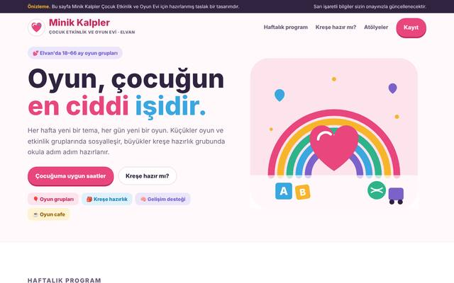
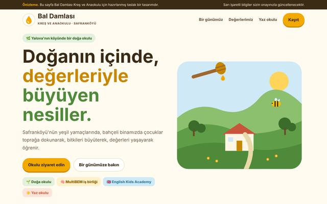
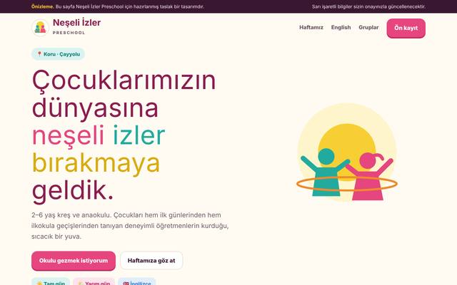
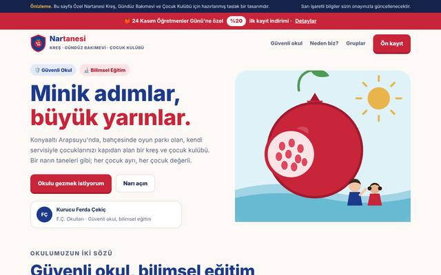
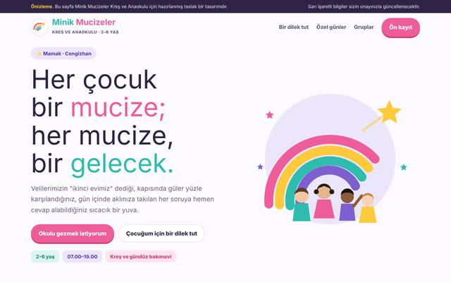
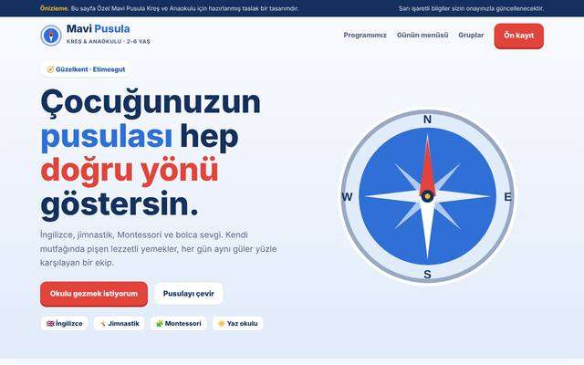
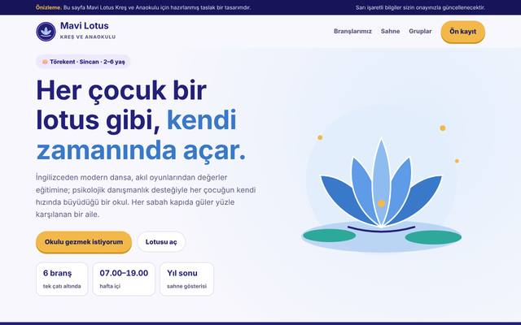
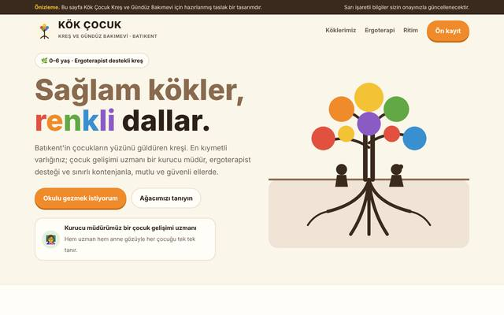
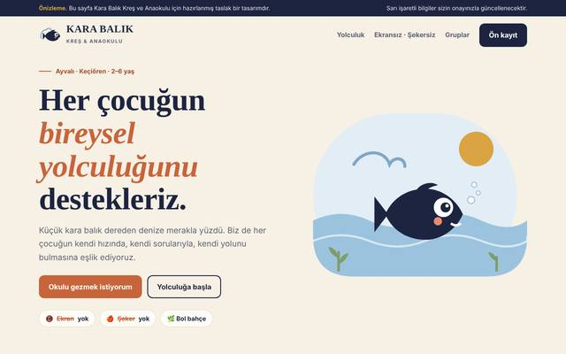
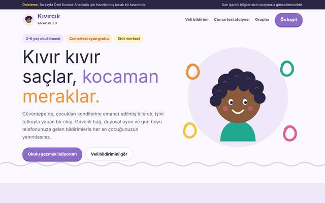
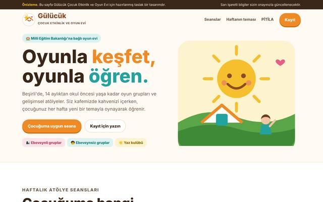
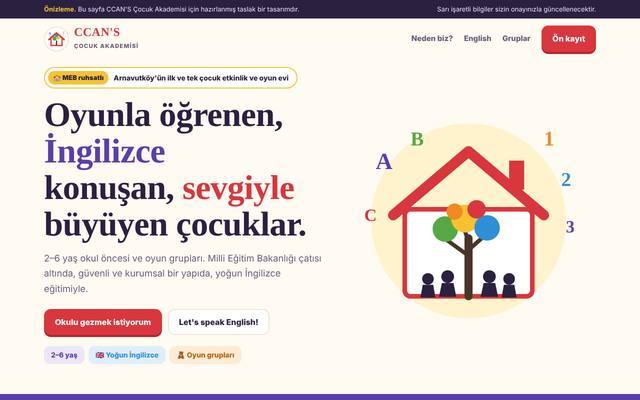
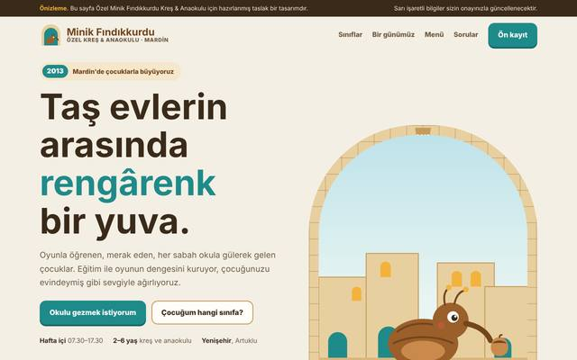
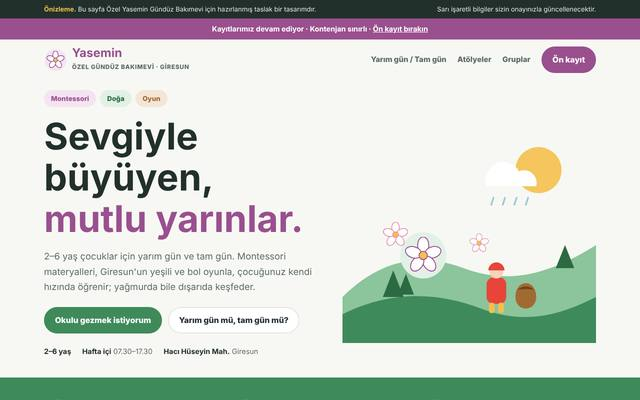
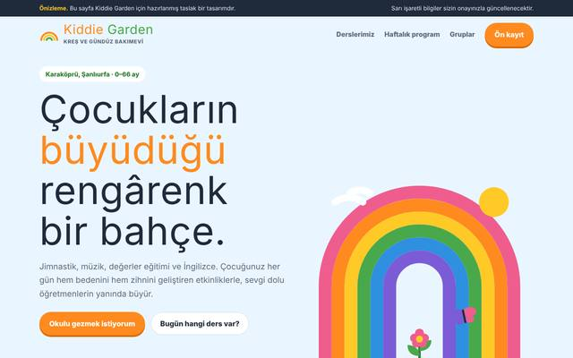
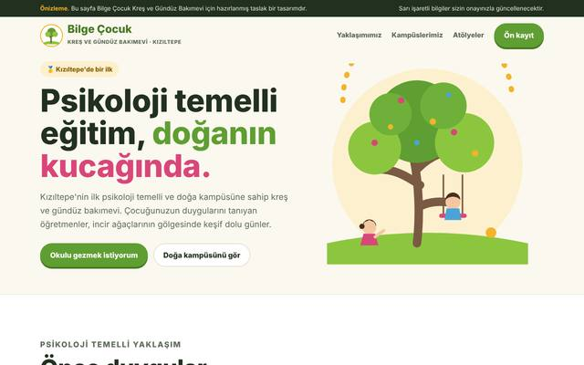
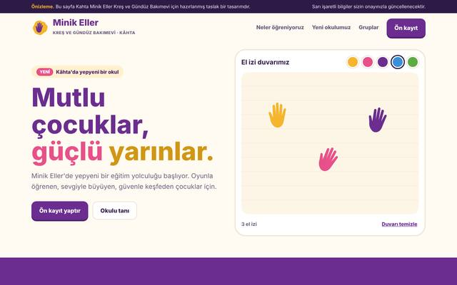
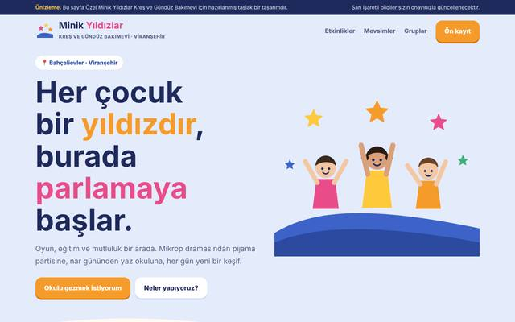
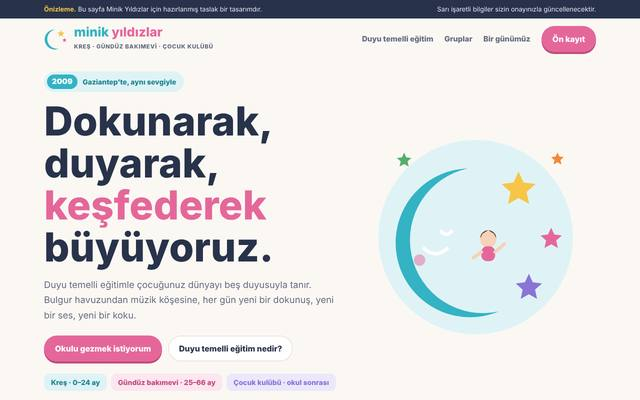
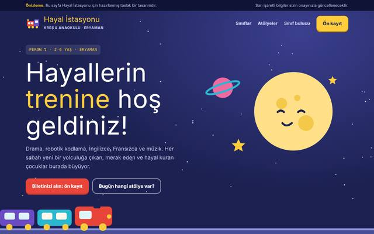
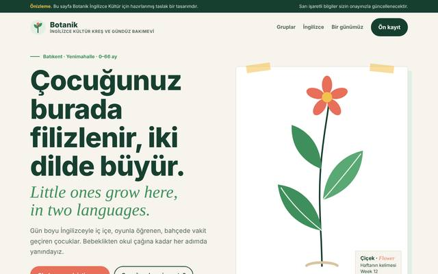
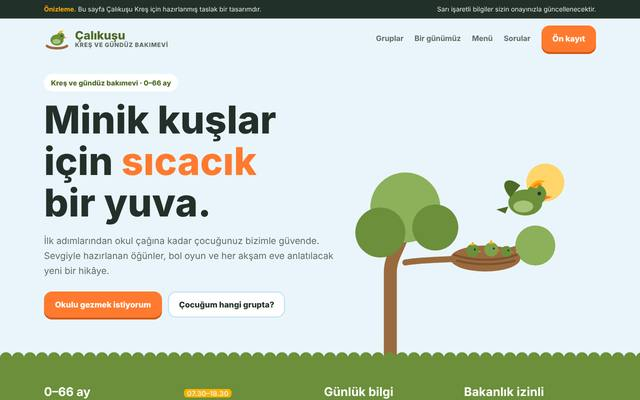
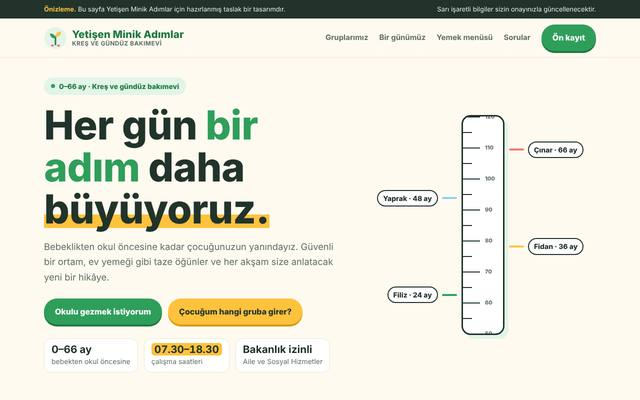
Her sitede velinin aradığı bölümler
Okula özel bir oyun
Yaş kaydırıcısı, turşu kavanozu, ışık masası… Veli siteyi gezmekle kalmaz, oynar ve okulu aklında tutar.
Gruplar ve program
Çocuğun yaşına göre grubu, günlük akış ve etkinlikler bir bakışta.
Ön kayıt WhatsApp'a
Form, hazır yazılmış bir mesaj olarak okulun telefonuna düşer.
Telefonda kusursuz
Velilerin çoğu telefondan bakar; her site önce telefona göre tasarlanır.
Dört adımda yayında
İnceleme
Okulunuzu, Instagram'ınızı ve velilerin yorumlarını inceliyorum.
Size özel taslak
Okulunuza özel bir taslak hazırlıyorum; karar vermeden önce görüyorsunuz.
Düzenleme
Fotoğraflarınız ve bilgilerinizle siteyi son hâline getiriyoruz.
Yayın ve bakım
Kendi alan adınızla yayına alıyorum, güncellemeleri ben yapıyorum.
Okulunuza özel taslak isteyin
Okulunuzun adını yazmanız yeterli. Birkaç gün içinde size özel bir taslak hazırlayıp gönderirim.